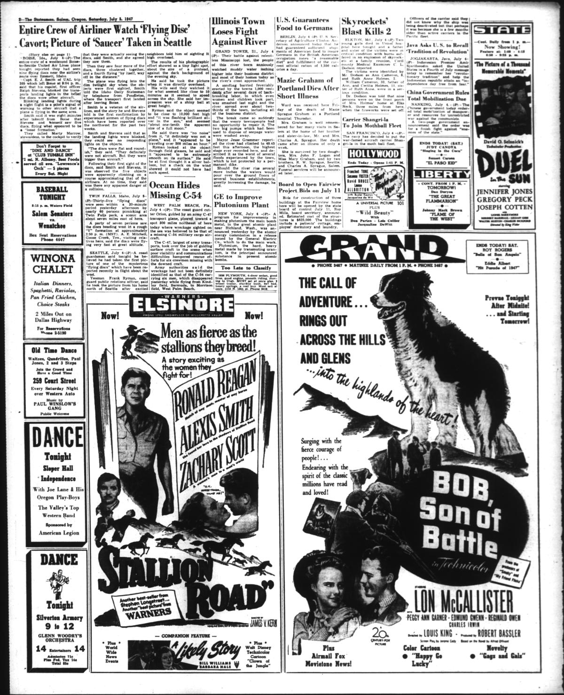
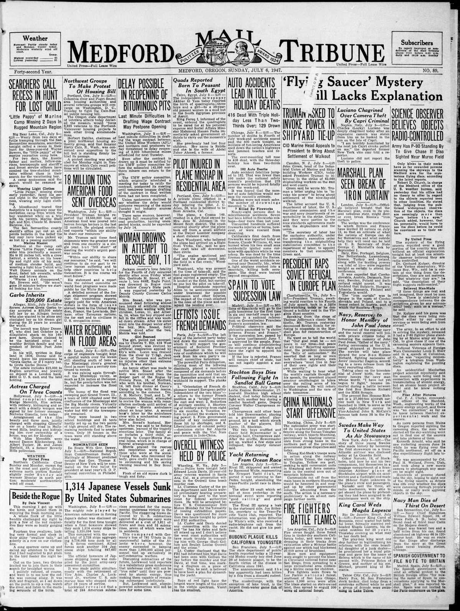
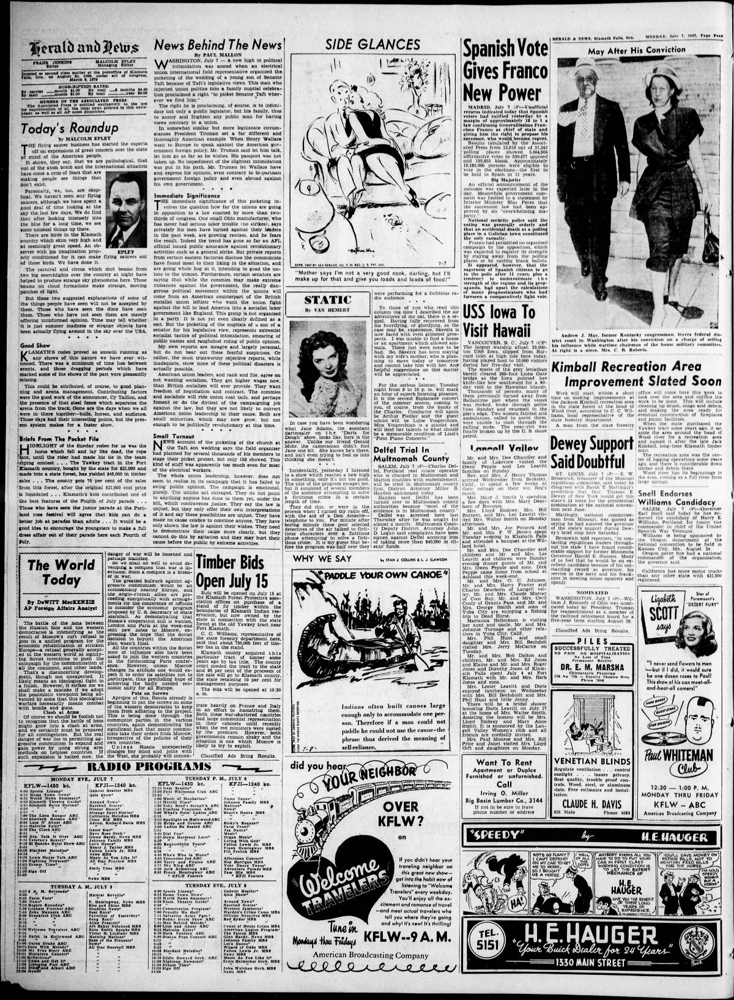

HN HN-564 · July 5, 1947 · Paranormal, Folklore & Curiosities > UFOs & Unidentified Sightings > UFO reports
Source: Indianapolis Times, p. 1 — original page; National Archives, Air Force UFO investigations.
Report: “Science Turns Jaundiced Eye on 'Flying Saucer' Stories†described proliferating eyewitness claims and skeptical suggestions involving perceptual errors, ordinary objects, and public anxiety.
Assessment: These are competing interpretations in contemporary reporting. Neither the sensational sightings nor the scientists' immediate generalizations independently establish the identity of each reported object. The Air Force subsequently investigated subsets of reports through formal projects; this article does not resolve them all.
Identity-review candidate peers: HN-578:Algorithmic
Authentic scans retrieved from Historic Oregon Newspapers (University of Oregon). Article crops are located using the archive's own OCR word coordinates and rendered at native crop resolution; page scans are reduced-size access renditions. No images were generated, mocked, or retouched.



Not yet acquired. Queued for provider-specific acquisition testing (see source-acquisition manifest).
URL (preserved verbatim): https://newspapers.library.in.gov/?a=d&d=IPT19470705.1.1
Saved research report: Historical_Newspaper_Event_Research_553-577_2026-10-23.md
Evidence note: A newspaper report means a historical publication made a claim; it does not establish that claim as fact. Contemporary reporting is separated from later scholarly context and our own assessment.